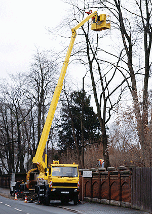

Bei der Festlegung von Sicherungsmaßnahmen wird unterschieden zwischen Arbeitsstellen von längerer Dauer und kürzerer Dauer. Darunter wird folgendes verstanden:
Arbeitsstellen/Straßenbaustellen von längerer Dauer
sind stationäre Baustellen, die einen Kalendertag und mehr
bestehen.
Arbeitsstellen/Straßenbaustellen von kürzerer Dauer
sind stationäre Baustellen, die nur stundenweise
bei Tageshellichkeit (Tagesbaustellen) oder während der Dunkelheit (Nachtbaustellen) betrieben werden, z. B.:
oder
bewegliche Arbeitsstellen, wie z. B.